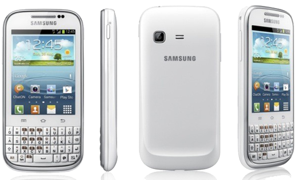

삼성 갤럭시 챗
1. 외관

삼성전자가 2012년 7월에 출시한 안드로이드 스마트폰.
2. 사양
| 프로세서 | Broadcom BCM21654 SoC. ARM Cortex-A9 850 MHz CPU[1], VideoCore-Ⅳ VPU | ||
| 메모리 | 512 MB LPDDR1 SDRAM, 4 GB 내장 메모리, micro SDHC (최대 32GB 지원) | ||
| 디스플레이 |
3.0인치 QVGA(320 x 240) RGB 서브픽셀 방식의 TFT-LCD (133 ppi) 멀티터치 지원 정전식 터치 스크린 |
||
| 네트워크 | 기본 | HSDPA & HSUPA & UMTS, GSM & EDGE | Wi-Fi 802.11b/g/n, 블루투스 3.0+A2DP |
| - | - | ||
| 카메라 | 후면 200만 화소 | ||
| 배터리 | Li-lon 1200 mAh | ||
| 운영체제 | 안드로이드 4.0 (Icecream Sandwich) → 4.1 (Jelly Bean) | ||
| 규격 | 59.3 x 118.9 x 11.7 mm, 112 g | ||
3. 상세
바 쿼티 모델로 삼성전자가 제작한 메신저 어플리케이션인 챗온과 연계하기 위해 출시되었다.
사양은 4.0 ICS를 탑재한 다른 모델과 비교해보면 상당히 떨어지지만, 삼성 터치위즈 5.0 자체가 나름대로 최적화가 되어있는지 이 사양에도 괜찮게 돌아간다.
게다가 QVGA라는 괴악한 해상도를 사용하면서 4.1 젤리빈 업그레이드 대상 기기로 선정되었다.